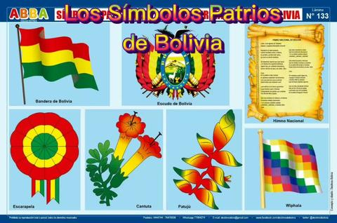
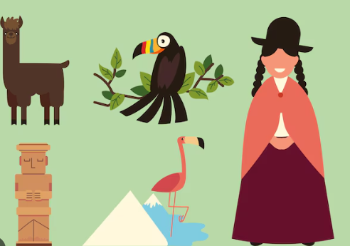
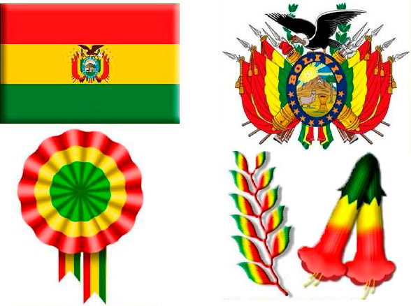

| Bolivianos el hado propicio, coronó nuestros votos y anhelo; es ya libre ya libre este suelo, ya cesó su servil condición | Simbolos Patrios de Bolivia
|  |
|---|---|---|
|  | Al estruendo marcial que ayer fuera, y al clamor de la guerra horroroso,; siguen hoy en contraste armonioso, dulces himnos de paz y de unión. | Culturas de Bolivia
|
|  | Principales danzas de Bolivia
| De la patria, el alto nombre, en glorioso esplendor conservemos; y en sus aras de nuevo juremos, ¡Morir antes que esclavos vivir! |